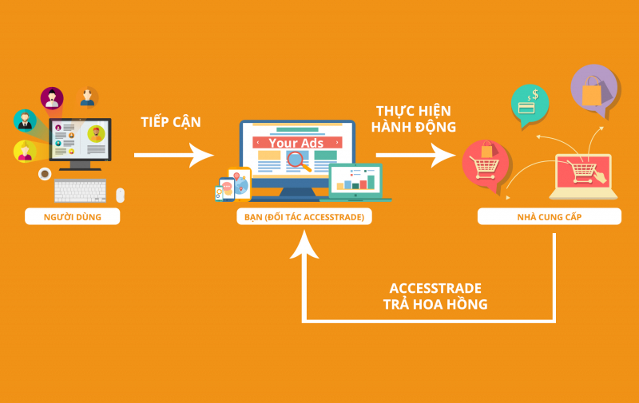
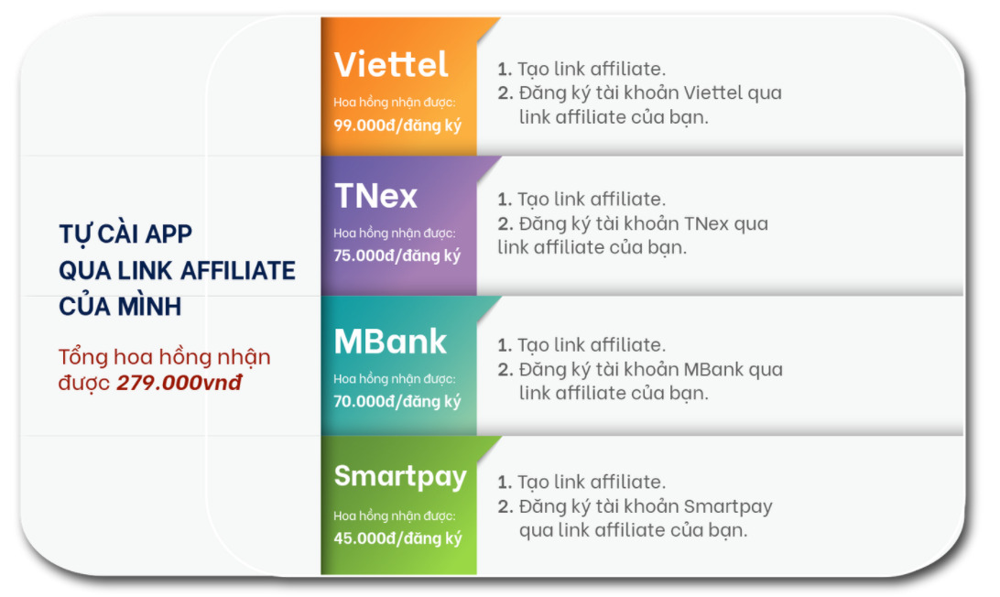
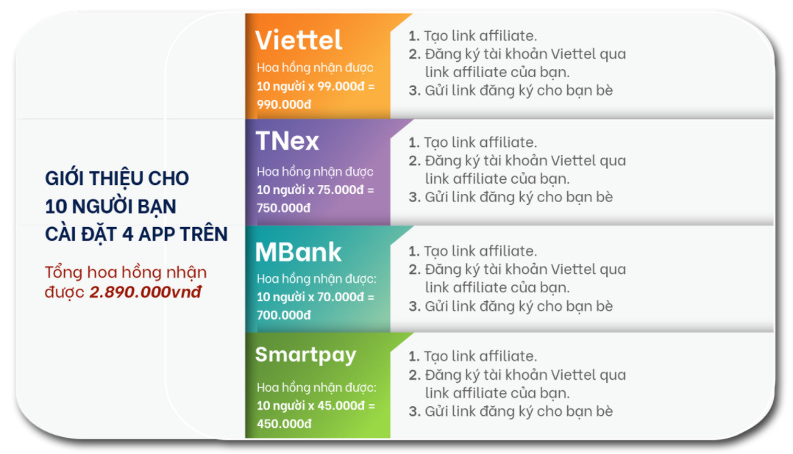

Kiếm tiền với ACCESSTRADE có xứng đáng với thời gian của bạn?
Điều gì sẽ xảy ra nếu bạn có thể kiếm tiền bất cứ lúc nào, từ bất cứ đâu – ngay cả khi bạn đang ngủ? Hãy nghĩ về nó như một khoản đầu tư cần thiết cho tương lai độc lập về tài chính của bạn. Trong bài đăng này, chúng tôi sẽ đề cập tổng quan kiến thức cơ bản về và cách kiếm tiền affiliate marketing. Cùng xem bạn cần phải chuẩn bị những gì khi bắt đầu hành trình kiếm tiền với ACCESSTRADE nhé!
Affiliate Marketing là gì?
Định nghĩa
Affiliate Marketing (tiếp thị liên kết) là một mô hình quảng bá sản phẩm, dịch vụ. Trong đó, các nhà phân phối (affiliate/publisher) dựa trên năng lực, sự hiểu biết của mình sẽ thực hiện tiếp thị, thu hút khách hàng (end user) mua hàng, sử dụng dịch vụ của nhà cung cấp (advertiser/merchant) và từ đó nhà phân phối sẽ nhận được hoa hồng từ nhà cung cấp với mỗi đơn hàng thành công hoặc hoàn thành các hành động cụ thể.
Ở mô hình truyền thống thường xảy ra rất nhiều bất cập, chủ shop (advertiser) phải tự tuyển dụng, hướng dẫn từng cộng tác viên (Publisher). Đồng thời việc quản lý hàng hoá và theo dõi đơn hàng có thành công hay không cũng là vấn đề lớn, ảnh hưởng quyền lợi cả hai bên. Chính vì thế, Affiliate Network – ACCESSTRADE là cầu nối trung gian quan trọng, cung cấp cùng lúc hàng nghìn publisher cho các chủ shop (doanh nghiệp). Còn các publisher cộng tác cũng có đa dạng sản phẩm để thỏa sức lựa chọn. Đồng thời còn cung cấp bảng quản lý đơn hàng minh bạch, nhanh chóng, đảm bảo quyền lợi cho các bên.
Affiliate Marketing hoạt động như thế nào?
Công việc chính của publisher đó là giới thiệu, quảng bá chiến dịch của các nhãn nhãn hàng, thương hiệu nổi tiếng trên ACCESSTRADE với nhiều ngành hàng khác nhau như: Thương mại điện tử, du lịch, dịch vụ, tài chính, viễn thông…tới người tiêu dùng qua nhưng đường link liên kết từ ACCESSTRADE. Nếu có phát sinh đơn hàng thành công từ phía khách hàng qua đường link liên kết thì bạn sẽ nhận được hoa hồng.
Ví dụ:
Bạn có một chiếc đèn pin chiến thuật tuyệt vời và bạn quảng cáo, thu hút khách hàng mua nó.
Để làm như vậy, khách hàng cần nhấp vào liên kết của bạn để xem xét và mua hàng.
Sau khi khách hàng của bạn hoàn tất việc mua hàng, bạn sẽ nhận được một khoản hoa hồng từ nhà sản xuất đèn pin mà không cần mất vốn nhập hàng chỉ bằng cách quảng cáo theo những cách khác nhau: review, chạy ads, giới thiệu trên trang Facebook cá nhân…về chiếc đèn pin này. Đây chính là các chương trình tiếp thị liên kết – affiliate marketing.
-
Tóm lại, đây là cách tiếp thị liên kết hoạt động:
- Bước 1: Chọn một thị trường ngách
- Bước 2: Tham gia chương trình tiếp thị liên kết
- Bước 3: Quảng cáo sản phẩm
- Bước 4: Theo dõi và tối ưu hóa chuyển đổi
- Bước 5: Nhận hoa hồng
Tại sao nên bắt đầu tham gia tiếp thị liên kết – kiếm tiền với ACCESSTRADE
Hoàn toàn miễn phí
ACCESSTRADE hoàn toàn miễn phí khi publisher đăng ký tài khoản và hoạt động trên hệ thống. Hơn nữa, còn có nhiều khóa học miễn phí về marketing online dành cho publisher mới khi tham gia kiếm tiền với ACCESTRADE.
Hệ thống minh bạch
Với hệ thống chuyên nghiệp theo dõi các hành động, thao tác mua hàng để bạn có thể theo dõi một cách công khai, minh bạch, các giao dịch được quản lý chặt chẽ và có giao diện báo cáo rõ ràng, đảm bảo quyền lợi nhằm nâng cao lợi nhuận cho tất cả publisher khi tham gia kiếm tiền với ACCESSTRADE.
Thu nhập thụ động
Dù là công việc nào cũng cần yêu cầu bạn bỏ công sức, chất xám và thời gian để “hái được quả ngọt”. Nhưng đối với tiếp thị liên kết thì khác, công việc này lại sở hữu một “năng lực đặc biệt” là cung cấp cho bạn khả năng kiếm tiền kể cả khi đang ngủ. Bằng cách đầu tư một lượng thời gian ban đầu vào một chiến dịch tại ACCESSTRADE và quảng bá nó, bạn sẽ thấy hoa hồng liên tục được tạo ra vào bất cứ thời gian nào khi người tiêu dùng hoàn thành từng yêu cầu của chiến dịch (mua sản phẩm, đăng ký tài khoản ngân hàng…). Ngay cả khi bạn không ngồi trước máy tính, điện thoại thì với các kỹ năng tiếp thị của bạn sẽ mang lại cho bạn nguồn thu nhập ổn định.
Thời gian linh hoạt
Về cơ bản công việc của một publisher cũng tương như một freelancer, bạn sẽ có được sự độc lập trong việc thiết lập mục tiêu, lựa chọn sản phẩm và cả thời gian làm việc mà không cần chịu sự giám sát hay quy định của bất cứ ai. Nếu bạn là người không thích đến văn phòng làm việc thì tiếp thị liên kết là giải pháp hoàn hảo.
Thu nhập dựa trên hiệu suất
Với những công việc làm công ăn lương, bạn có thể làm việc 80 giờ đồng một tuần mà chỉ kiếm được mức lương cố định. Điều tốt về tiếp thị liên kết là nó hoàn toàn dựa trên hiệu suất của bạn. Bạn sẽ nhận được từ nó những gì bạn đặt vào nó. Rèn luyện kỹ năng đánh giá và viết các chiến dịch hấp dẫn sẽ giúp cải thiện trực tiếp doanh thu của bạn. Cuối cùng, bạn sẽ được trả tiền cho công việc xuất sắc mà bạn làm.
Các mô hình tính giá khi tham gia Affiliate Marketing
Làm thế nào để bạn được trả tiền khi kiếm tiền với ACCESSTRADE? Dưới đây là các mô hình tính phí tương ứng với mỗi loại chiến dịch:
ACCESSTRADE sở hữu những nền tảng nào?
- pub2.accesstrade.vn – Hệ thống pub2 gồm đa dạng các chiến dịch thuộc nhiều lĩnh vực khác nhau như: tài chính, bảo hiểm, giáo dục, thương mại điện tử…
- dimuadi.vn – Hệ thống D2C – gồm các chiến dịch về dược mỹ phẩm, chăm sóc sức khỏe, sắc đẹp…Ứng dụng Dimuadi là ứng dụng kiếm tiền của hệ thống D2C.
- koc.asia – Hệ thống KOC dành cho KOLs
Hiện tại, ACCESSTRADE đang có những nền tảng sau:
Bạn có thể dùng 01 tài khoản publisher để đăng nhập tất cả nền tảng trong hệ sinh thái của ACCESSTRADE.
Cách để bắt đầu kiếm tiền với ACCESSTRADE
Đăng ký tài khoản Publisher
Để bắt đầu trở thành một nhà tiếp thị liên kết, điều quan trọng là bạn phải sở hữu một tài khoản publisher để bắt đầu kiếm tiền với ACCESSTRADE. Chỉ với 2 phút, bạn đã có thể trở thành publisher và kiếm tiền với ACCESSTRADE:
Lựa chọn chiến dịch phù hợp để kiếm tiền với ACCESSTRADE
Dưới thời đại công nghệ số bùng nổ mạnh mẽ song song việc mua sắm online trở thành một phần thiết yếu của cuộc sống, số lượng publisher tham gia kiếm tiền với ACCESSTRADE tại Việt Nam cũng tăng đến con số hàng triệu. Vì vậy, để giúp bạn tìm được ngách thị trường phù hợp cũng như thu hút khách hàng thành công, dưới đây là bước quyết định thành công của bạn khi làm affiliate nói chung hay kiếm tiền với ACCESSTRADE nói riêng: Thực hành bán hàng, quảng bá sản phẩm.
- Chọn sản phẩm để bán: Sau khi đã đăng ký tài khoản ACCESSTRADE rồi thì bạn bắt đầu tìm kiếm sản phẩm phù hợp để bán. Phù hợp ở đây tức là sản phẩm bạn chọn phải phù hợp với chủ đề website của bạn, ví dụ bạn có website chuyên hướng dẫn kỹ năng thiết kế website wordpress thì những sản phẩm phù hợp chính là theme (giao diện), plugin (trình cắm), hosting…Để hiệu quả trong việc bán hàng bạn nên chọn những sản phẩm chất lượng tốt từ những nhà cung cấp uy tín nhằm mang nhiều lợi ích nhất cho khách hàng.
- Lấy link affiliate: Mỗi một sản phẩm đều có link affiliate riêng, sau khi bạn đã lựa chọn được sản phẩm phù hợp thì lấy link để gắn vào website/blog. Khi khách hàng click vào link đó và mua sản phẩm bạn sẽ nhận được hoa hồng, thậm chí nếu khách hàng không mua sản phẩm đó mà mua những sản phẩm khác bạn vẫn nhận được hoa hồng. Khi làm affiliate marketing ở ACCESSTRADE, có một cơ chế rất hay nữa là lưu cookie của trình duyệt. Nghĩa là nếu khách hàng click vào nhưng không mua ngay, tuy nhiên sau đó 30 ngày khách hàng nhớ ra và mua thì bạn vẫn nhận được hoa hồng.
- Viết bài quảng cáo sản phẩm và quảng bá: Sau khi đã tạo link sản phẩm thành công, bạn cần viết bài để đánh giá sản phẩm đó, chia sẻ kinh nghiệm cá nhân, tác dụng, lợi ích của sản phẩm để thu hút, kêu gọi người dùng nhấn vào link và thực hiện hành động mua hàng.
Để kiếm tiền với ACCESSTRADE từ tiếp thị liên kết, bạn sẽ cần xác định một sản phẩm có thị trường tiềm năng trong một thị trường ngách hoặc danh mục sản phẩm mà bạn yêu thích. Sau đó, bạn cần phải quảng bá nó, cho dù thông qua trang website, blog, video, email hoặc quảng cáo trên mạng xã hội cũng đều hướng đến mục đích cuối cùng là hướng lưu lượng truy cập đến trang sản phẩm của bạn:
- Đăng ký các chiến dịch Mobile App
- Tự mua hàng qua link affiliate của mình
- Gửi link affiliate cho bạn bè, người thân
- Quảng link affiliate trên các group Facebook, trang cá nhân,…
- Quảng link affiliate trên diễn đàn, kênh YouTube…
- Xây dựng website, blog
- Sử dụng Facebook Ads
- Sử dụng chatbot gửi tin nhắn hàng loạt
- Sử dụng Email marketing
- Quảng cáo Google Adwords
- ...
10 cách kiếm tiền với ACCESSTRADE dành cho người mới:
Chẳng hạn chỉ với vài bước dưới đây, bạn đã dễ dàng có được hoa hồng đầu tiên từ cách chiến dịch mobile app khi kiếm tiền với ACCESSTRADE:
 